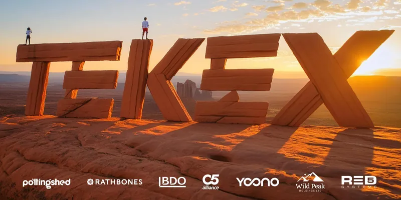

TEKEX IOM3
Global Innovation. Isle of Man Opportunity.
Isle of ManSantander Work Cafe
Register for TEKEX IOM3 on Eventbrite (opens in a new tab)Founders on stage, investors in the room, and the conversations that follow — across Jersey, Guernsey and the Isle of Man.
The next events are being lined up now. Stay in the loop to hear first.

Global Innovation. Isle of Man Opportunity.
Isle of ManSantander Work Cafe
Register for TEKEX IOM3 on Eventbrite (opens in a new tab)TEKEX is back in the Isle of Man, this time to identify global innovations that could become valuable Isle of Man opportunities, then connect each one with the local investment, partners and decision-makers required to launch it.
Jason Bissell, exited founder and now entrepreneur, will be speaking on Innovation Islands and what’s next for the Crown. Mark Sutcliffe will deliver the keynote on connecting ambitious innovation with agile jurisdictions, in his talk ‘The Billion Dollar Exit to Building in the Crown’.
You’ll also see a panel debate and have the chance to put your questions to founders.
All ticket proceeds go to Craig’s Heartstrong Foundation.
Line-up
More than fifty evenings since 2018 — in Jersey, Guernsey and the Isle of Man and, for a year, online. Open any one for its line-up.
BDO Jersey, St Helier
A full day of innovators, founders and debate on whether health could be Jersey’s next key industry: wellness and alternative health in the morning, the bioeconomic opportunity after lunch, then med tech and digital health into the evening.
Each session closed on a panel debate about the opportunity for Jersey, and scaling beyond our shores.
The Sundown, St Helier
We’ll be meeting at The Sundown for our Summer Social.
There’ll be a live jam session on stage with local musicians and all-round good vibes after our Good Vibes hack session.
BDO Jersey, St Helier
Get ready for an awesome in-person experience at TEKEX 36. It’s the perfect chance to connect, learn, and witness game changers and passionistas.
Our line-up is once again a colourful blend of founders, some in fundraise stage and one whose product has 20 million users.
MannBenham Advocates, Douglas
With a General Election coming in September 2026, a changing domestic economy and fast-moving technology, the panel asked how the Island can best embrace the future, and how MHKs and government can help.
Facilitated by James Kingston of CDOT Future, hosted by MannBenham and sponsored by StreamOn.
Santander Work Cafe, Douglas
TEKEX IoM 2 is where innovators, makers and tech lovers come together to share ideas, create projects and network. Whether you’re a newbie or a pro, it’s all about learning, collaborating and having fun.
BDO, St Helier — streamed to Guernsey
Our second Female Founder event, in collaboration with Alt Collective, with a dynamic line-up of founders and leaders. Alt Collective hosted, with an introduction from compère Sophie Clyde-Smith, streaming across both Guernsey and Jersey.
Thanks to our collaborators: Rathbones, BDO and C5.
Santander Work Cafe, Douglas
The launch of TEKEX in the Isle of Man: an innovation community connecting investors, founders and professionals across the Crown Dependencies.
Jayne Sibley’s Sibstar won Dragons’ Den and Sara Davies as an investor, and has already raised successfully through TEKEX. Shelley Langan-Newton, a founder superstar in the Isle of Man, joined our stage as SQR entered its funding round. Tim Huelin, another successful Jersey-based founder, has built Daysium — ‘Count your Days’ — through our network.
Ticket fees went to Manx Decaf and Forget Me Not IoM, given Sibstar’s support for people living with dementia.
BDO Jersey, St Helier
An incredible line-up of speakers and an open and honest AI debate — The Great DebAIte, with Oliver Farber, Nyxie Redondo, Gus Fraser, Charlie Morgan, Rory Steel and more.
C5 hubs, Jersey and Guernsey — live-streamed
Our usual format: six speakers, a strict ten-minute presentation each, followed by Q&A — live-streamed between the C5 hubs in Jersey and Guernsey.
Hanna Roos: “We give power back to clients, and joy back to lawyers.” Aavalynx combines AI with human legal expertise to make dispute resolution faster, cheaper and more human. George McLeod asked about “The £3 Trillion Blind Spot: Reinventing Trusts for the 99%”, and Andy Lowe presented his first breakout film.
Thank you to our collaborators: PwC, Rathbones, C5 and Digital Jersey.
PwC, St Helier
Our first step in building the next generation of innovators: an evening for 16–24 year olds to explore what innovation means to them, their role in shaping the future, and how to connect with like-minded peers.
Some of Jersey’s most influential business leaders shared their stories, challenges and advice — but the point was a space for young minds to come together, not just to listen.
C5 hubs, Jersey and Guernsey — live-streamed
A melting pot of talent, founders and innovators from both islands, plus government updates on business support: Guernsey’s GEIS scheme (Sasha Kazantseva) and the Better Business Support Scheme (Paul Murphy).
Headliners included Summit Deals, a new investor platform housing some of TEKEX’s opportunities and investors; machine learning against the Channel Islands’ skin-cancer rate, the highest in the British Isles; and how the microbiome can be harnessed for health.
C5 Alliance, Windward House, St Helier
An evening of founder talks and networking, with off and on island speakers covering everything from space to finance and film to geopolitics.
Thanks to our collaborators: PwC and Digital Jersey.
BDO, St Helier
This edition celebrated female founders from fintech to UX, to a capacity audience.
C5 Alliance, Windward House, St Helier
Swagger Paws, a Jersey-based e-commerce company built for dog walkers by dog walkers, looking for its next phase of growth. Jake Schofield on the highs, lows and lessons of creating and exiting a health-tech start-up.
Then the most common pinch point at TEKEX — payments — with Robert Crutchington on how Jersey can benefit from an independent payment gateway, David Parkinson on Bitcoin and a multi-planetary future, and Seb Lawson on AI and education in the workplace.
C5 Alliance, Admiral Park, St Peter Port
From a Dragons’ Den winner to the founder who sold Feelunique, a Bitcoin thought experiment and BDO/C5’s first digital worker — plus advice on protecting your brand as a start-up.
Digital Jersey Hub, St Helier
Live pitches from the bootcampers as they released their businesses for the first time, with the audience voting for a winner.
TEKEX collaborates on the Digital Jersey Start-up Bootcamp with JT and PwC.
C5 Alliance, Windward House, St Helier
A digital connection space to meet innovative people and hear their business journeys — from island genetics to agri-tech, with the next generation of TEKEX revealing its purpose and mission.
C5 Hub, The Plaza, St Peter Port
Our fourth Guernsey evening, at the C5 Hub, with Louis Pike teasing the TEKEX evolution that became TEKEX Gen.
BDO, St Helier
Our charity was Ocean Culture Life, introduced by bootcamp winner Tamsin Raine. Nik Rose presented Io-Co’s health incubator model and what it could mean for Jersey, and SHUFL Capital talked about fund one and the launch of their second.
Digital Jersey Hub, St Helier
As the 12-week Digital Jersey Bootcamp came to a close, the seven shortlisted founders faced their final challenge: TEKEX live. Ten-minute pitches, live Slido voting, food and drinks.
Northern Trust, St Peter Port
Aaron Chatterley, who co-founded Feelunique in 2005 and sold it to LVMH/Sephora in 2021, on his new teen beauty brand Indu — alongside three Channel Island founders.
BDO, St Helier
Our first event at BDO. Aaron Chatterley on round two of his entrepreneurial journey, Ian Rhodes — formerly an engineer, innovator and CEO at McLaren — on pivoting F1 technology into healthcare, and a med-tech theme carried on by Austin Gibbs.
Our charity was Healing Waves, and the after party was at Ce Soir.
Digital Jersey Hub, St Helier
Ending 2022 on a high: Toby Sawyer revealed his new venture, PwC on promoting a diverse and inclusive digital culture, Ed and Tony Moretta of Digital Jersey chewing the fat on tech and Jersey, and Wayne Hennessey-Barrett on 4G Capital’s journey from the military to a neobank in Africa.
Digital Jersey Hub, St Helier
A lunchtime raising awareness of the core island support that volunteers and charities give, ending in open discussion.
Northern Trust, St Peter Port
Better periods with less waste, impact investment, and a cyber-security start-up changing how people see their role in protecting a business.
Digital Jersey Hub, St Helier
Ticket sales went to the Jersey Women’s Refuge, followed by the after party at Ce Soir. Thanks to our partners Digital Jersey, JT and PwC, and to Barclays for food and drink.
Barclays, Esplanade, St Helier
Open banking against Visa and Mastercard, strengthening the weakest link in cyber security, and a receipt revolution — with partners JT, PwC and Digital Jersey, hosted by Barclays.
Specsavers HQ, Guernsey
Hosted by Tom Langford, with thanks to Specsavers for hosting, Barclays Eagle Labs for refreshments and our new partners JT and PwC.
RBC, Esplanade, St Helier
Hosted by Ed Prow, with four founders presenting in turn: augmented reality, NFTs, an accountancy app and green mobility.
Santander Work Café, St Helier
From an app boosting conviction rates to AI for mental health, with a harmonious outlook on fintech and the story of a nano-materials raise.
Santander Work Café, St Helier
Our first event back in person after the virtual series, at Santander’s Work Café.
Online
Channel Island and off-island businesses, from sustainable shopping to Jersey’s digital twin.
Online
Access over ownership with a borrowing-and-lending app, five ways to leverage professional knowledge, and a sneak peek at the Santander Work Café coming to Jersey.
Online
Five minutes from the International Women’s Academy, then a fully interactive virtual stadium, a subscription platform for video creators and a scaling Safelink.
Online
The last of the summer’s virtual events, with Durrell as our charity: reconnecting with nature at Jersey Zoo, then ESI Monitor, MyPay and Virtex Stadium.
Online
Free tickets with an optional donation to Caring Cooks of Jersey. From a call from the MOD about a symptom-tracing app to equity capital markets in a pandemic.
PwC, Esplanade, St Helier
Our first event of the decade, and the first with our new venue partner PwC.
Ogier, Esplanade, St Helier
Jersey Finance’s fintech agenda, the dark side of innovation, and the next generation of escrow.
Ogier, Esplanade, St Helier
A flagship event for our first year, from a former head of the US Marines to The Economist’s data designers.
The Embassy, St Helier
Digitalising the agricultural value chain, and rating businesses for their environmental and social commitments.
The Embassy, St Helier
John Morris on Smith & Williamson’s scale-up programme, Julian Box on his new global venture Vybbe, and Andy Prow — yes, Ed’s brother — live on screen on RedShield and its funding round.
Jersey
Galaxkey and TrustFlight on stage, then updates from two earlier speakers — including where the crowdfunding work with the JFSC and Digital Jersey had got to.
Jersey
Stratton Street in the elevator, a first look at rvoke before it launched, and a talk on security tokens.
Infuse Group office, Jersey
Julian Box, founder of Calligo, on his investment journey and mostly on artificial intelligence, after a pitch in the elevator; then withgoto.com. Beers and snacks, as usual.
Infuse Group office, Jersey
Julian Gums on his start-up Drop Express, and a talk from Aaron Chatterley.
Lovin’ Spoonful, St Helier
Two talks over drinks at Lovin’ Spoonful, before the evening moved on to Bastille.
Project 52, St Helier
Short talks from Jenson Nixen and MyKii, followed by networking drinks.
Get upcoming event announcements and booking details from Jersey, Guernsey and the Isle of Man, straight to your inbox.